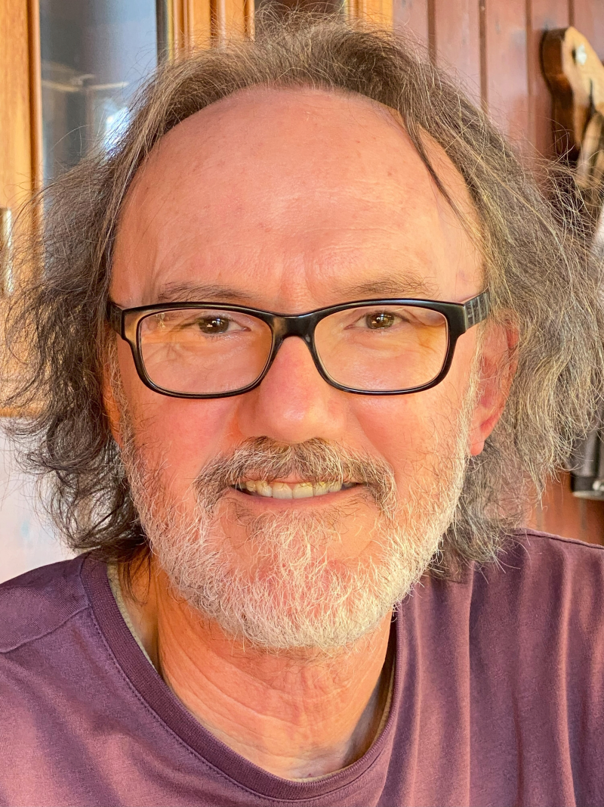
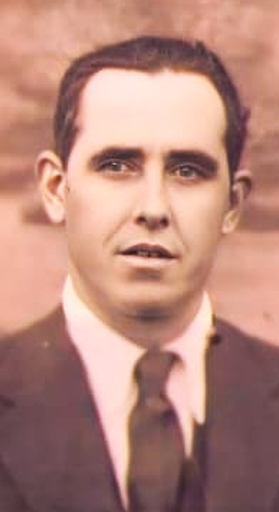
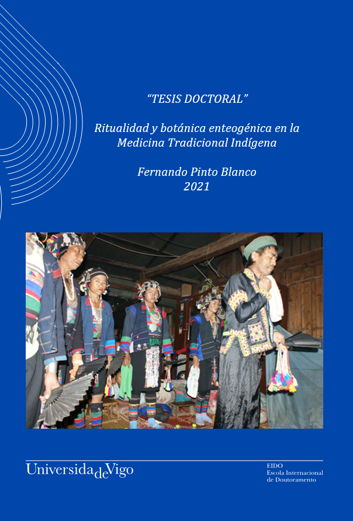
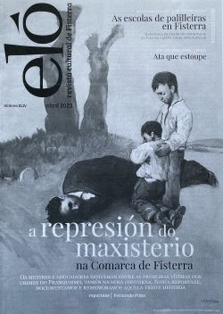

Médico · Investigador · Autor
Fernando Pinto Blanco é doutor pola Universidade de Vigo e licenciado en Medicina e Cirurxía pola Universidade de Santiago de Compostela.
Desenvolveu a súa actividade profesional como médico especialista en Medicina Familiar e Comunitaria no Servizo Galego de Saúde, acumulando corenta anos de exercicio profesional ata a súa xubilación en maio de 2024.
Entre 1998 e 2016 foi coordinador e docente do Máster de Medicina Natural da Facultade de Medicina da Universidade de Santiago de Compostela.
As súas principais liñas de interese céntranse na medicina tradicional indíxena, a etnobotánica, os enteóxenos, o xamanismo e as relacións entre saúde, cultura e espiritualidade.
Á memoria do meu avó
Eliseo Pinto
mestre de Nemenzo (Compostela),
represaliado, desaparecido
e condenado ao esquecemento
no tráxico verán de 1936.


Tese doutoral defendida na Universidade de Vigo centrada no estudo do xamanismo, os enteóxenos e a medicina tradicional indíxena desde unha perspectiva intercultural.
A investigación baséase en décadas de traballo de campo e observación participante realizadas en dezasete países de África, América, Asia e Oceanía.
A través da análise de diversas prácticas rituais e do uso de plantas e fungos enteóxenos, examínanse tanto os aspectos culturais e etnográficos como os cambios psicofisiolóxicos asociados a estas experiencias.
Os resultados mostran importantes semellanzas transculturais nas prácticas chamánicas e no emprego ritual de enteóxenos.
Palabras chave: etnobotánica, enteóxenos, medicina tradicional indíxena, xamanismo.
Descargar a tese completa (PDF)
Correo electrónico: ferpinbla@gmail.com
Instagram: @viajeschamanicos